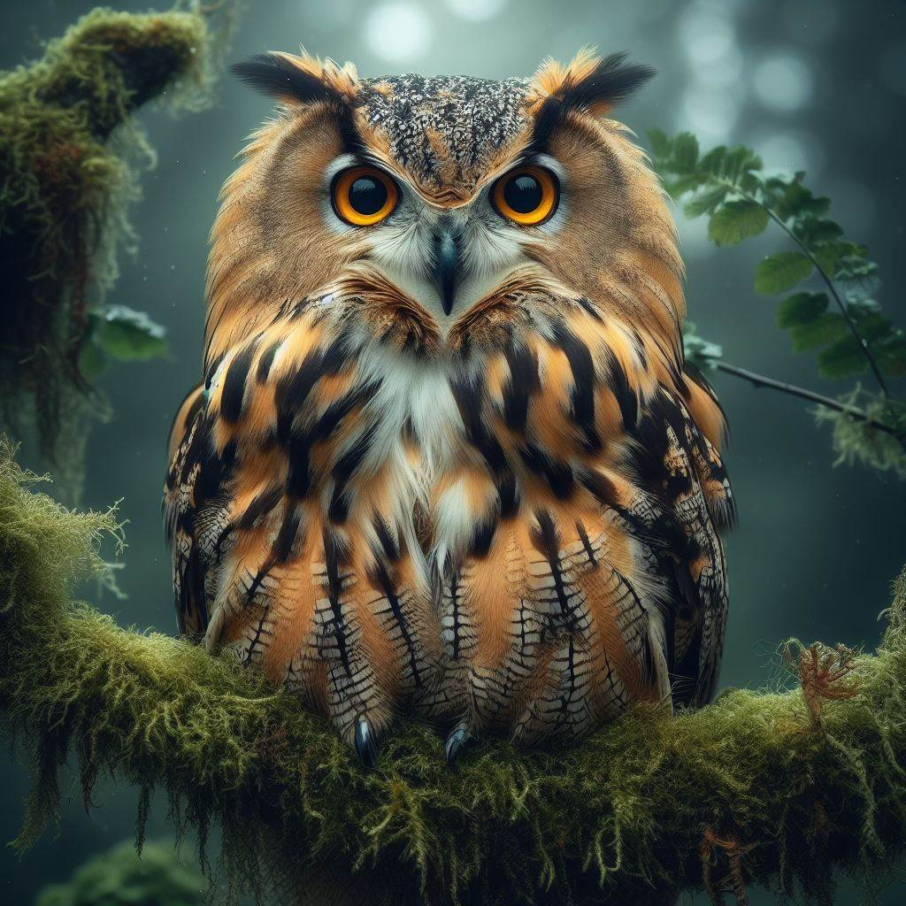

Description
Owls are birds of prey known for their distinctive facial discs, large eyes, and silent flight. They have various species with unique appearances and habitats.
Habitat

Owls can be found in a wide range of habitats, including forests, grasslands, deserts, and urban areas, depending on the species.
Diet
Owls are carnivorous birds that primarily feed on small mammals such as rodents, as well as birds and insects.
Behavior
Owls are known for their nocturnal behavior, hunting at night and using their exceptional hearing and vision to locate prey.
Adaptations
Owls possess unique adaptations such as silent flight, excellent night vision, and sharp talons for hunting.
Conservation Status
Many owl species are of "Least Concern" in terms of conservation status, but habitat loss and climate change pose threats to some species.
Cultural Significance
Owls hold cultural significance as symbols of wisdom and knowledge in many traditions. They have been featured in folklore, mythology, and art throughout history.
Interesting Facts
- Owls can rotate their heads up to 270 degrees in either direction. - They have asymmetrical ear placement, allowing for precise sound location. - Some owl species are capable of vocal mimicry.
Research and Studies
- **Sensory Adaptations**
- Vision: Owls have large, forward-facing eyes that provide excellent binocular vision and depth perception. Their retinas contain a high density of rod cells, enabling superior night vision.
- Hearing: Many owl species have asymmetrical ear placement, allowing them to pinpoint the location of sounds with remarkable precision. This adaptation is crucial for hunting in the dark.
- **Silent Flight**
- Owls are known for their silent flight, which is made possible by specialized wing and feather structures. Their wings have serrated edges and soft feathers that reduce noise during flight, allowing them to approach prey stealthily.
- **Ecology and Behavior**
- Diet: Owls are carnivorous, feeding primarily on small mammals, birds, insects, and reptiles. Their diet varies depending on the species and habitat.
- Nesting and Reproduction: Owls often nest in tree cavities, abandoned buildings, or other sheltered locations. They lay eggs and incubate them until they hatch, with the young owls relying on their parents for food and protection.
- **Conservation and Threats**
- Habitat Loss: Deforestation and habitat fragmentation pose significant threats to owl populations.
- Pesticides and Pollution: Chemical pollutants can harm owls directly or through the food chain.
- Conservation Efforts: Efforts to protect owl habitats and reduce pesticide use are crucial for conserving these birds.